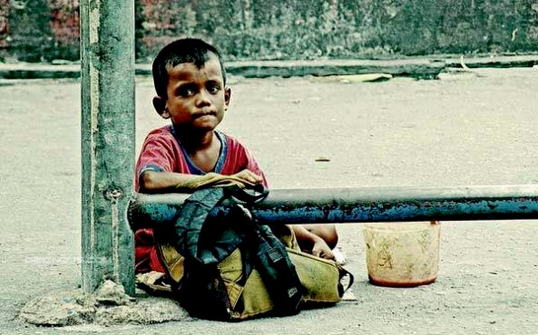

The numbers and statistics behind the
poverty line left us disturbed. The need for basic facilities was a luxury to many. Children and women have
been facing the maximum impact of poverty. We decided to make a change and began the work. A longer and
sustainable commitment was required to bring about a bigger change in their lives.
We devised a
method through which we screen every detail about the child and bring them forward to the donors. They can
read it in detail and choose the cause they wish to support and direct the funds towards it.
The
change begins right here, right now.
